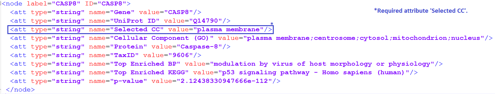

Demonstration videos
Try CellNetVis
Here you find two example networks to try our system.
There are two methods to visualize the example networks:
-
The first one is to directly visualize the networks by just clicking on a pre-made URL, like the following links:
-
Homo sapiens MAPK signaling pathway from KEGG database (1.7 MB):
click here. -
Human Protein Atlas supportive immunohistochemistry (IH) and immunofluorescence (IF) data (17.3MB): click here.
-
Yeast network: click here.
-
The second method is to download and upload the network as a XGMML file. This file format is explained in the next section. After downloading the network, you must load it by clicking on the button in the Load Network section from CellNetVis.
Example networks to download:
-
Homo sapiens MAPK signaling pathway from KEGG database (1.7 MB): right click here to 'save link as' .xgmml.
-
Human Protein Atlas supportive immunohistochemistry (IH) and immunofluorescence (IF) data (17.3 MB): right click here to 'save link as' .xgmml.
-
Yeast network (6.7 MB): right click here to 'save link as' .xgmml.
-
RIG-I-like receptor signaling pathway downloaded from InnateDB (466 kB): right click here to 'save link as' .xgmml.
-
Network file format and how to load it
To load a network, click on the "Browse" button in the Load Network section. Select a XGMML file, for instance: some_network.xgmml. XGMML is a markup language created to describe graphs (networks). It uses tags to describe nodes and edges of a graph. Its purpose is to enable the exchange of graphs between different tools. The XGMML file format specification and guides may be found here.
The XGMML file accepted by CellNetVis must contain an attribute named Selected CC (Selected Cellular Component) or Localization in each node, so the system can separate the nodes properly. If you are using the Integrated Interactome System (IIS) or InnateDB to create a network, you do not need to worry about it. This attribute is automatically created by them.
If your network does not have the Selected CC/Localization attribute, you have three options:
- to create this attribute in the XGMML file using your own script. You may use your own algorithm to select the most representative cellular component for each protein/node in your problem.
- to make CellNetVis automatically load the Localization from InnateDB webservice. In this case, each node needs to have an attribute named InnateDB, Ensembl, Entrez or UniProt with its respective ID in the XGMML file. CellNetVis will use these IDs to query the Localization from InnateDB webservice.
- to use the genes/proteins list of your current network and create a new network on IIS, InnateDB or other tool that selects a unique component for each node.
The attribute Selected CC/Localization in the XGMML file looks like this:

The system uses the information in the Selected CC/Localization attribute of each node to constrain it in the corresponding cellular component. It may take some time to load the network. It will depend on your computer power, on your operational system and on your browser (in our tests Chrome had the best response performance and the worst XGMML loading/parsing time). The network diagram and the donut chart will be automatically displayed. The donut chart is also interactive; it shows the distribution of all nodes per cellular component.
Accepted values for Selected CC/Localization: extracellular, cell wall, plasma membrane, mitochondrion, endoplasmic reticulum, golgi apparatus, endosome, centrosome, microtubule organising centre, lysosome, vacuole, glyosysome, glycosome, peroxisome, amyloplast, apicoplast, chloroplast, plastid, cytoplasm, cytosol and nucleus. Cell surface nodes will be placed on the extracellular component. Any other value not defined on CellNetVis or empty attribute will match with cytosol. The donut chart will display the original values defined on the XGMML file.
Node search
To search a node you must use the text box at the Search section. For single search (1 word) you must write the node name and click on Find. For multiple search (2 or more words) you must separate them using line breaks. Select the Exact match for exact searches. For instance, the search for 'a' when exact match is selected will select only the node with a label equal to 'a'. Nodes with labels equal to 'ab' will not be selected.
Neighborhood selection and labels by click
Clicking on a node will select its neighbors and show their labels. The Clear button deselects these nodes and hides their labels.
Hide unselected nodes
Select the nodes you want to keep visible using a mouse click or the search function. Click on the Filter button and only selected nodes will be visible and affected by the force-based algorithm. Click on the Clear button to set all nodes visible again. The Clear button may be used to hide labels and deselect nodes.
Changing nodes colors
Select an attribute at the Nodes Attributes section.
Showing and hiding all nodes labels
Use the Show button to show all labels of the network. Use the Hide button to hide all labels of the network.
Showing values of nodes attributes
To show all values of a node you just have to click on a node. The table on the right will be updated.
Degree, betweenness, and clustering coefficients
Three new network topology measure attributes can be computed for each node of the entire network: degree, betweenness, and clustering. On the Nodes section, click on Compute net. measures. In the Select an attribute menu they are identified by [], e.g. [degree].
Accessing UniProt webpage
If the nodes have an UniProt attribute, you can open a new tab showing the UniProt website. The query will search for the UniProt Accession of the node. To do it, click on a node and then on the UniProt Accession link that appears in the table of attribute values.
Force-based algorithm
The force-based algorithm is started automatically when a network is loaded. To stop the forces you must click on the Stop button. To reset the forces you must click on the Start button. Forces cannot be activated if there is edge bundling calculated. See Edge bundling section for details.
Force parameters
Some parameters can be easly set up to best fit the network layout according to yours analysis needs:
- Repulsive: define the alpha value for the non-overlap function. If nodes collide, the algorithm will try to separate them. Zero alpha value means this algorithm is disabled. It is a high complex algorithm and demands time. Thus it is disabled by default for large networks. A value from 0.5 to 0.6 is recommended for small and medium-sized networks.
- Friction: this value represents how free nodes are. Value near to 1 has the effect of nodes moving fast and freely. Value near to 0 has the effect of nodes moving slowly.
- Charge: define how charged (negatively) the nodes are. The effect is that the higher is the negative charge, the higher are the repulsive forces between nodes. This has similar effect to the alpha value of Repulsive parameter defined above, but the algorithm do not check if nodes collide. This algorithm is faster than the Repulsive and can be used even with large networks.
- Link strength: this parameter defines how strong the force is over an edge to mantain source and target nodes close to each other. Low value has the effect of a sparse layout; high value has the effect of a tight layout.
Moving nodes to fixed positions while force is running
Click on a node and drag it. All nodes you move are going to stay on fixed positions until you reset the force-based algorithm/layout. Others nodes (non fixed) are going to move according to the force-based algorithm. To reset the forces and set all nodes as non-fixed you must click on the Start button. To stop the forces you must click on Stop. When it is stopped, the nodes may still be moved. Nodes cannot be moved if there is edge bundling calculated. See Edge bundling section for details.
Edge bundling
To bundle the edges you must click on Compute edge bundling. The force-algorithm must be stopped before the computation. When there is edge bundling computed, the force-based algorithm cannot be started. To start the forces again you must remove the bundling edges, clicking on Destroy bundling. You may compare the normal vs. bundling edges clicking on Show and on Hide bundling. When bundling edges, you cannot move any node or organelle. Selection and node labels can still be activated.
Exporting the network diagram
Write the file name on the text box bellow the network diagram. Select the file format: SVG or PNG. Click on Export image The SVG image can be edited in any Vectorial Editor. Our suggestion is Inkscape.
Exporting information from the donut chart
Write the file name on the text box bellow the donut chart diagram. Click on Export data. A CSV file will be downloaded with all cellular component names and corresponding percentage of nodes.
Cerebral Layout
The CerebralWeb can be used to create an alternative view. Click on More options (top menu) and then click on Create CerebralWeb layout. The diagram will be created at the bottom of the page.
Source code
CellNetVis is free and open-source. You can contribute to the project, send features requests or report bugs. You can contact us by e-mail or through the CellNetVis repository @ GitHub.